노경민
KAIST 기계공학과 24학번
gyungminnoh@kaist.ac.kr
기구 설계
PCB 제작
펌웨어 개발
BB8 로봇
- 옴니 휠, 베벨 기어, 서스펜션 자체 제작
- ESP32 WebSocket 기반 펌웨어로 모바일 조이스틱 UI를 통한 실시간 로봇 제어 구현
다이나믹셀 휴머노이드
Ball Plate System
- OpenCV 기반 비전 처리로 공의 실시간 위치 추정
Servo-Driven
Two-Legged Robot
- 4-Bar 메커니즘을 활용해서 관성모멘트를 최소화
- ESP32 WebSocket 기반 펌웨어로 실시간 로봇 제어 구현
Servo-Driven Quadruped Robot
- 알루미늄 파이프와 PLA 출력물만으로 기구부를 설계하여 하드웨어 제작 비용 최소화
- 16채널 PWM 드라이버 IC, IMU 모듈, ESP32 모듈을 연결하는 전용 PCB 보드 제작
- Host-ESP32-PCA9685-IMU 간 WebSocket/Serial 기반 실시간 제어·피드백 구조 개발
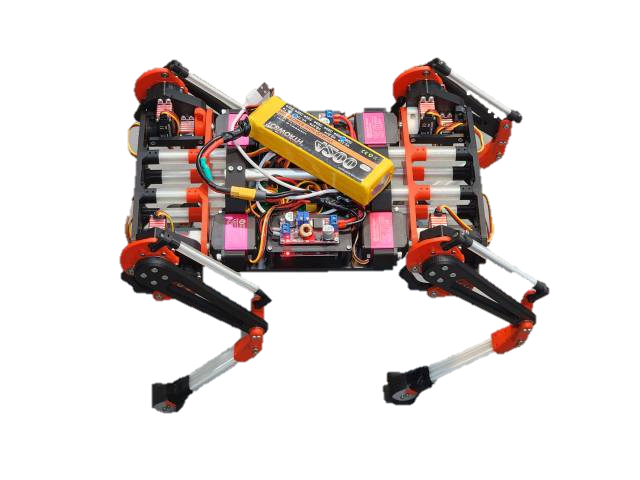
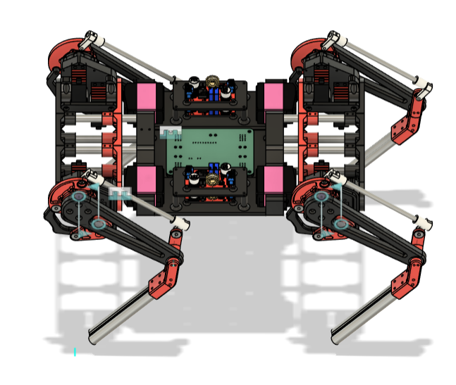
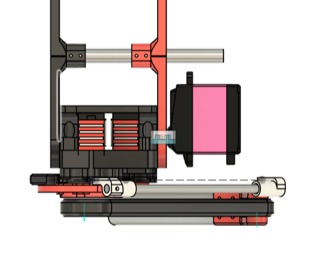
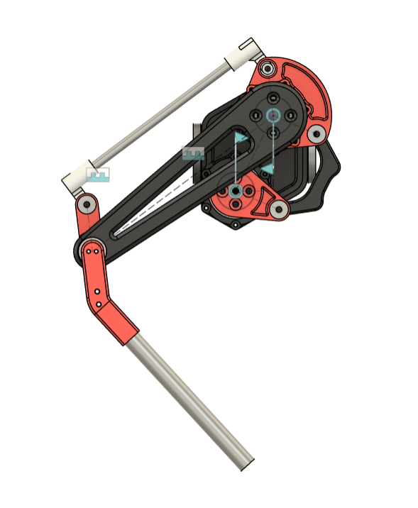
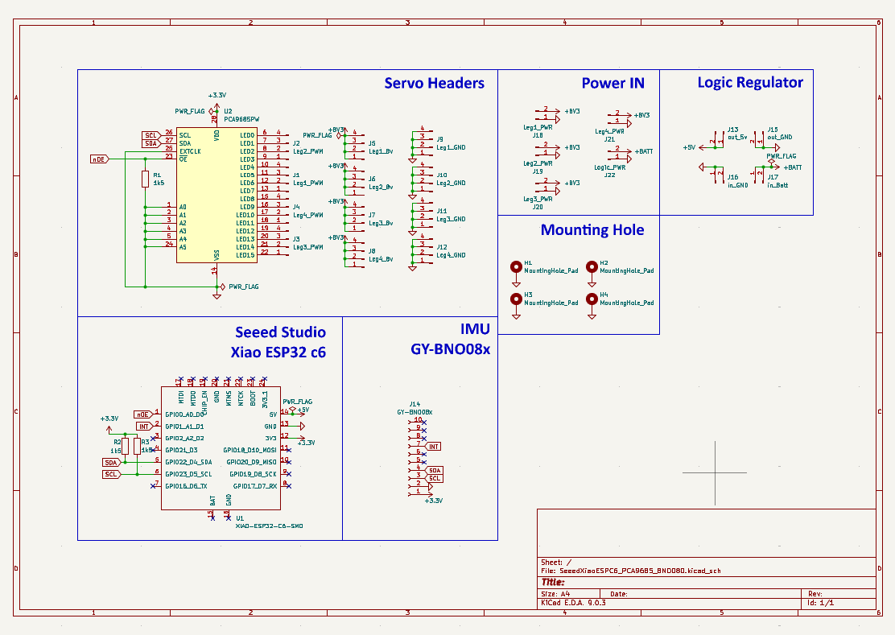

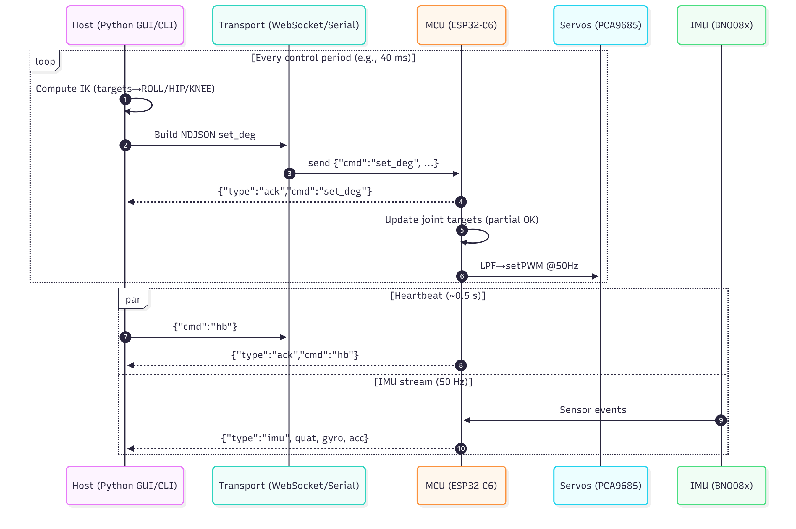
커스텀 BLDC
모터드라이버
- DRV8302 기반 커스텀 모터드라이버 회로 및 펌웨어 개발
- XT30(2+2) 기반 40V DC 및 CAN 통합 인터페이스
- 외부 FRAM IC를 통해 액추에이터별 설정값과 FOC/출력축 보정값을 전원 차단 후에도 유지하고 재부팅 시 자동 복원되도록 설계
- TMAG5170 3축 자기장 센서와 LUT 기반 각도 복원 알고리즘을 이용해 감속기 이후 출력축의 절대각을 추정하는 출력축 엔코더 기능 구현
- URC 로버의 드라이빙 인휠 모터, 스티어링 모터, 로봇팔 그리퍼 모터 제어에 적용
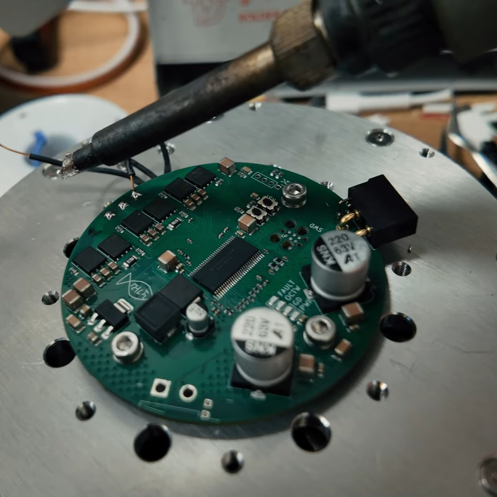

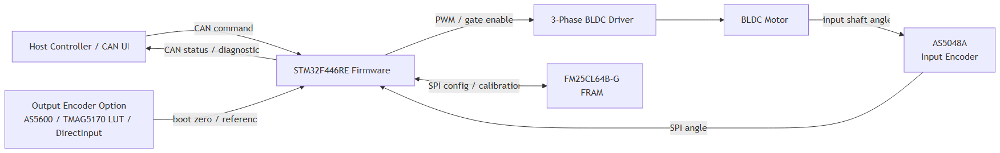

2026 URC MR2 그리퍼
- 웜 기어를 활용하여 최대 5kg을 들 수 있도록 제작
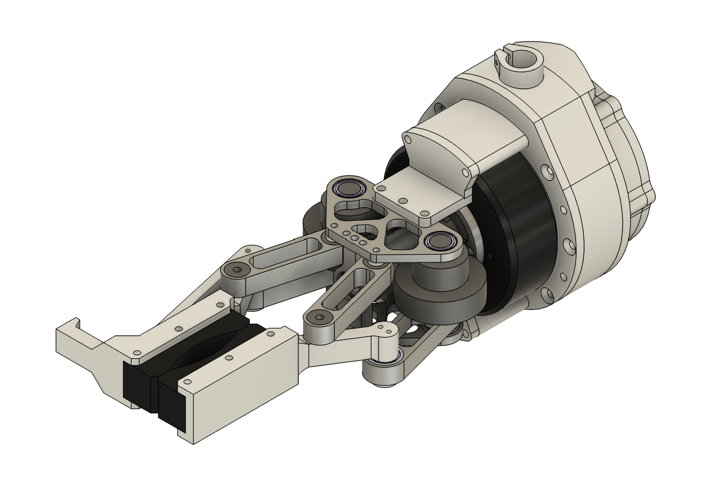

QDD
사족보행로봇
- 다리 기구부 설계/제작 완료
- SteadyWin WGG6010-8(GIM6010-8)+커스텀 BLDC 모터드라이버
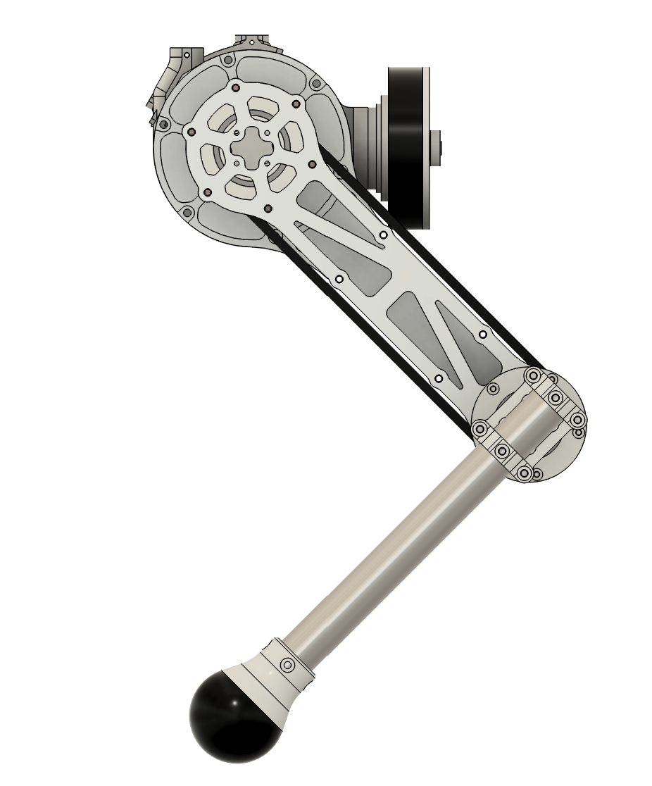
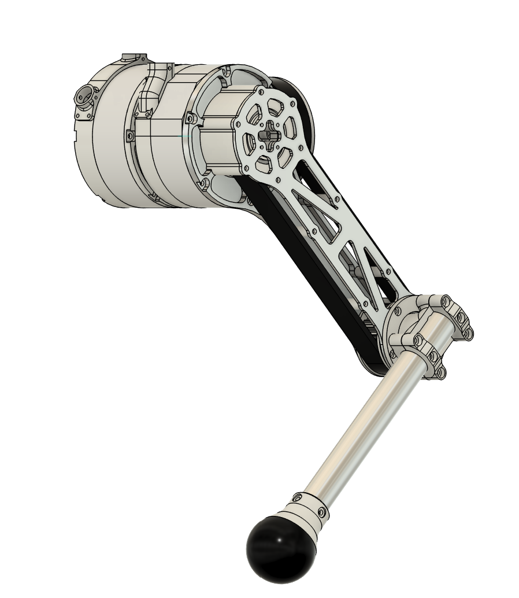
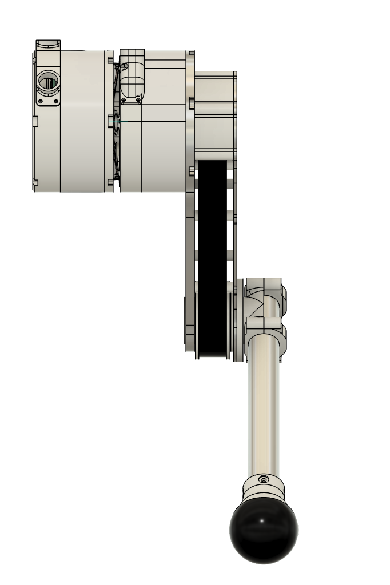
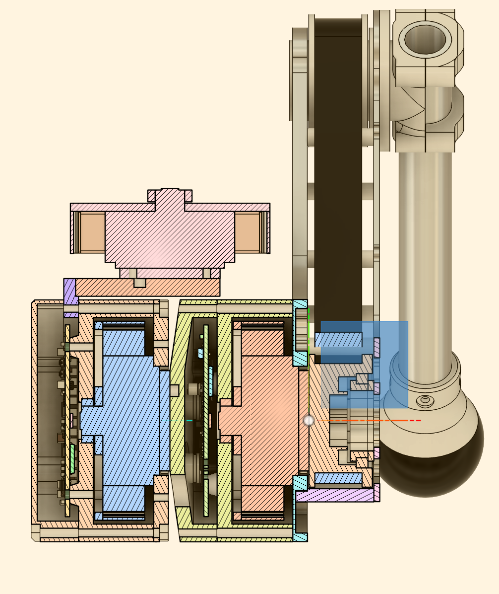
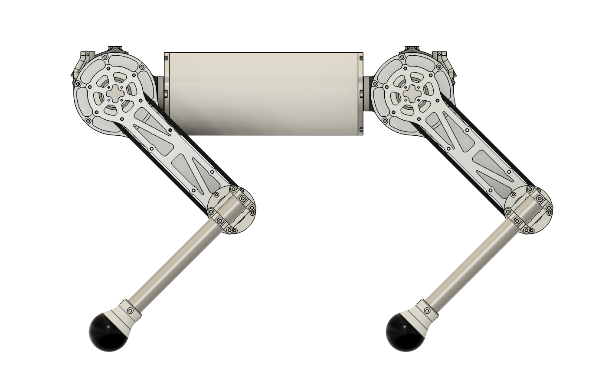
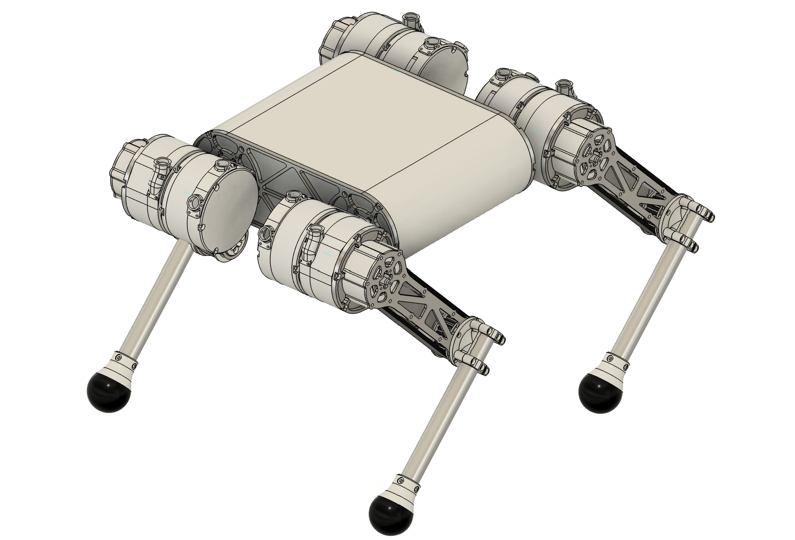